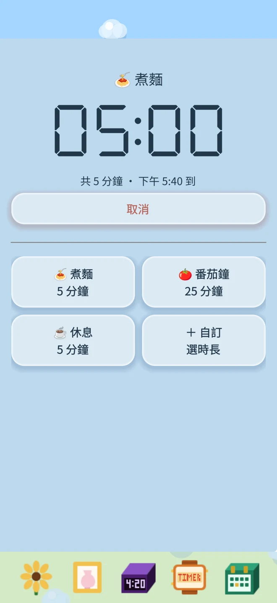
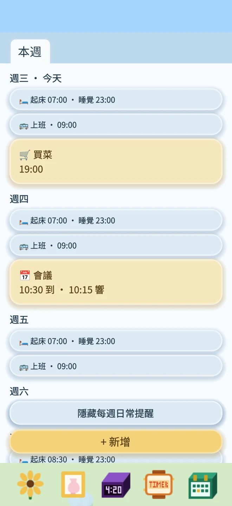
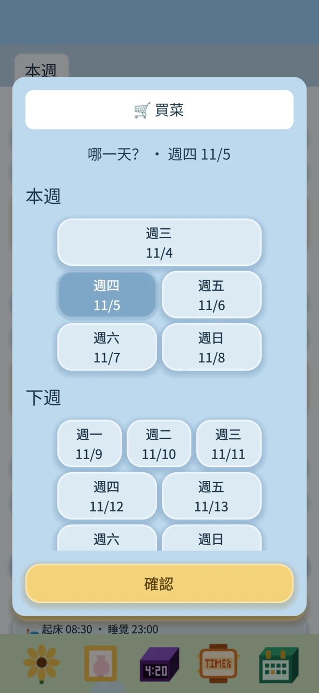
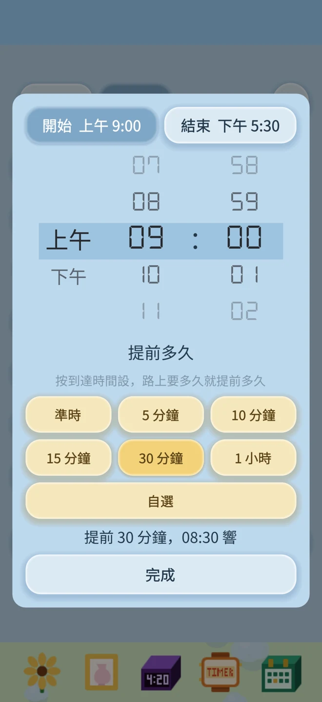

計時器：常用倒數計時，儲存後重複用
煮麵、泡茶、休息，選一個計時範本，確認後開始。
也可以儲存自己的名稱和時間，下次繼續用。

計時、安排、養花，每一天都順手。
無廣告，無訂閱，無需連網。完全屬於你。
鬧鐘、提醒和養花進度保存在你的裝置上。
在 App Store 下載煮麵、泡茶、休息，選一個計時範本，確認後開始。
也可以儲存自己的名稱和時間，下次繼續用。

本週、下週、下下週和更遠的安排，分週查看。藍色提醒每週重複，黃色提醒只響一次。



把肥料袋拖到花上，每用一包就長一步：一開始是小苗，第 1 包長出花苞，第 2 包開花，之後每一包都讓莖再長高一截。沒有上限，攢得越多長得越高。
把水壺拖到花上就能澆水，每天澆一次就夠了。太久不澆水，小花會慢慢枯萎：
蔫了別擔心，澆一次水馬上恢復精神。
當天的起床鬧鐘每貪睡一次，小花就低頭一點，貪睡 3 次彎到底。第二天它又會抬起頭來。往前翻日期，可以看到那天貪睡了幾次。
跳過一次：只跳過最近這一次提醒，下週同一時間照常響。
暫停這一天：把某個星期幾的所有提醒都停掉，直到你手動恢復。適合放假或長期不需要的日子。
所有鬧鐘、提醒和小花的資料只儲存在你的 iPhone 上，我們不收集、也不上傳任何資料。刪除 App 會同時刪除這些資料，且無法復原。
遇到問題或有建議，歡迎來信 💌